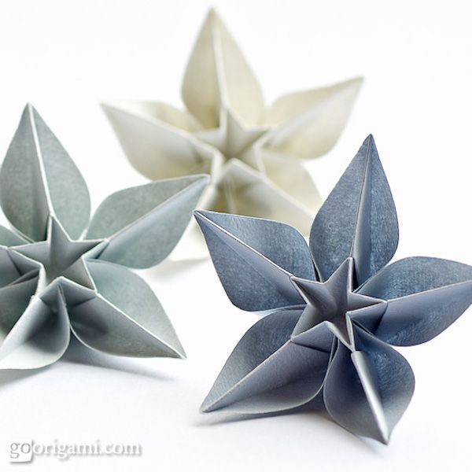
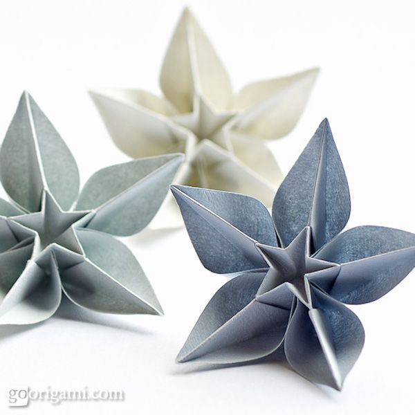

L’origami est un style dont les artistes plient le papier pour former des structures, par exemple des grues ou des grenouilles. Traditionnellement, les artistes n’utilisent aucun outil sauf le papier et leurs mains. Ce style d’art a probablement commencé quand le papier a été inventé. En Chine les premiers tracent de l’origami étaient trouvé en 1000 CE quand les personnes ont plié le papier en forme de petites pépites d’or appelé Yuan Bao qui ont été brûlé comme offrant pour les décédés. Aujourd’hui c’est une tradition de plier des petits objets et de les mettre sur les tombes des décédés. Pourtant le premier papier qui a été plié était une carte en Égypte fait de papyrus. Toutefois avec l’avancement du temps le papier a prospéré en plusieurs pays. Certains disent que la connaissance du papier a été introduite de Chine au Corée au 6e siècle et au Japon au 7e siècle par des moines bouddhistes. C’est au Japon que l’origami qu’on connaît aujourd’hui a été développé en forme d’art. En Japonais le mot “ori” veut dire plier et le mot kami veut dire le papier. Cependant le papier était cher et a été utilisé exclusivement pour les cérémonies et les rites. Plus Tard l’origami a été utilisé pour l’amusement et comme décorations autour d’un cadeau (appelé noshi). Éventuellement l’origami est devenu une tradition Européenne dont les parrains donnaient un certificat plié en style de l’origami à une enfant durant leur baptisme. À présent l’origami est plutôt utilisé comme passe-temps que pour la religion. Aujourd’hui il y a plusieurs variations de pliage pour des différents résultats.
Un artiste appelé Sipho Mabona a commencé son intérêt de l’origami à l’âge de cinq ans avec des avions en papier. Puis, 15 années plus tard en 2000, Sipho Mabona a décidé à utiliser l’origami pour créer ces propres créations. Depuis, il a eu plusieurs exhibitions autour du monde et il est maintenant en Zurich, Suède. Son propre style inclut des formations abstraites géométriques avec plusieurs structures complexes. Un projet est une structure 3D d’un éléphant d’une taille réaliste appelé “White Elephant”.
Quelques-unes des œuvres les plus difficiles utilisent des simples techniques de pliage. Par exemple la technique d’éventail est quand on prend une pièce de papier et on plie une section du papier horizontalement dans une façon que les bouts alignent avec les côtés. Puis on tourne le papier et on plie une autre section identique à la première dans la même direction. On continue jusqu’à la fin. Le résultat est une pièce de papier qui ressemble de l’ondulation ou plusieurs diront comme l’éventail. Une autre technique est de plier un papier en carré. Vous prenez une pièce de papier carré et on plie le papier en demi trois fois. Une fois diagonalement et deux fois horizontalement perpendiculaire sur le verso du papier. On prend les coins qui étaient pliés diagonalement et alignés au centre. Le haut et bas du papier devraient couvrir le milieu comme une poche carré dont un coin en bas peut ouvrir. Avec une combinaison de ces techniques avec plusieurs d’autres peuvent nous donner un résultat merveilleux.


Une nouvelle variation de l’origami a été créée en 1927 appelé l’origami courbé. Cette évolution de l’origami a été développée à travers les années. Les artistes plient un papier dans une façon précise en utilisant des variations de la technique d’éventail qui forcent le papier à monter pour former des structures complexes. Une des premières était une sculpture fait par un étudiant dans la course préliminaire de l’étude du papier enseigné par Josef Albers à l’école des arts Bauhaus en Allemagne. Cette pièce d’art fait par l’élève en Allemagne était une sculpture fait par un papier circulaire. Ce papier a été marqué avec un compas ou un coupeur de laser. Ensuite l’étudiant a plié sur les marques en utilisant la technique d’éventail. C’était le pliage qui était le plus difficile. En formant ce papier la sculpture a pris une structure d’une selle. Dès cette année, Josef Albers a commencé à enseigner comment le faire et ce style a été partagé autour du monde. Cette variation apparaît plusieurs fois dans les livres.
Aujourd’hui l’origami est un passe-temps ainsi qu’une forme d’art. Il y a plusieurs livres sur l’origami qui sont instructifs et informatifs. Maintenant on peut trouver comment faire une variété d’animaux et structures en utilisant l’origami.
 
